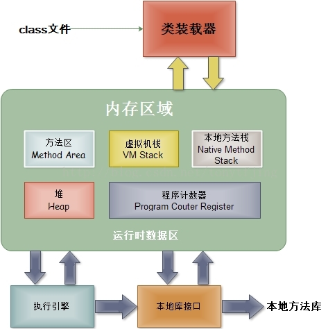
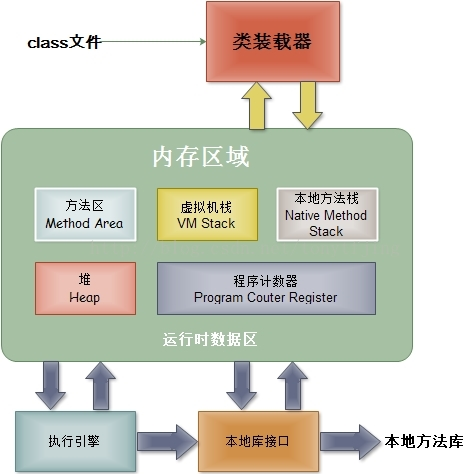

JVM深入理解
java课的作业让我们深入理解一下JVM虚拟机，之前看过很多相关知识，都容易忘掉，这里对最近学习到的知识做一下总结：
JVM简介
JVM的基本结构一般如下图所示：

每个JVM有两种机制，一个是类装载子系统，一个是负责执行包含在已装载类中的指令，成为执行引擎
java课的作业让我们深入理解一下JVM虚拟机，之前看过很多相关知识，都容易忘掉，这里对最近学习到的知识做一下总结：
JVM的基本结构一般如下图所示：

每个JVM有两种机制，一个是类装载子系统，一个是负责执行包含在已装载类中的指令，成为执行引擎
静下心来，沉淀知识。这一个月学的东西又是十分杂乱,也没什么时间静下心来，天文学的项目果然还是太难弄了，唉。
数据库作业并没有让我们去写个项目，而是去写篇论文了解现在数据库的发展。
传统的RDBMS目前面临着诸多挑战。我们都知道，RDBMS技术经历了很多年的发展，技术已经非常成熟，应用广泛。但是它也有一些限制，使其很难适应当今的大数据时代：
首先它的扩展性非常困难，由于存在很多各种各样的多表查询操作，使得RDBMS在扩展方面很艰难，需要非常复杂的技术才能实现扩展，而在数据量很多的情况下因而无法面对那些非结构化或半结构化的数据；
其次，RDBMS为了保证数据的一致性，牺牲了数据的读写性能，这样在数据量很大的情况下响应会非常慢，同时它具有有限的数据存储容量，无法存储海量的数据；
最后随着系统的规模增大，它的成本也会非常高。
NoSQL是基于键值对存储数据的，数据之间没有耦合性，所以NoSQL具有良好的扩展性，高效地读写能力以及低廉的成本，同时具有灵活的数据模型，可以处理非结构化或半结构化的大数据。主流NoSQL可以分为键值存储数据库、列存储数据库、文档型数据库、图形数据库四类，有很多著名的数据库以及相关的管理工具，例如redis、MongoDB、HBase等等，都具有高效地读写能力和良好的扩展性。
redis我们知道是使用内存存储的，如果因为某些原因无法将大量数据存储到内存中，就要考虑不能使用redis了。它的性能非常强劲，现实生活中的问题也都可以映射到它提供的数据结构上，更方便的帮助用户解决问题，同时基于它的复制、持久化和客户端分片等特性，我们可以很方便的扩展redis，大大提高响应速度。附加特性：发布与订阅，主从复制，持久化等
而NewSQL是一类现代关系型的DBMS，旨在为NoSQL的OLTP读写负载提供相同的可扩展性能，同时仍然提供事务的ACID保证,可参考论文《What’s really new in newsql》。如此一来，相对于传统的关系型数据库，NewSQL强调可扩展性，实现架构采用的是分布式shared-nothing集群，并且可以透明分片。而相对于NoSQL，NewSQL提供了关系模型、SQL支持、以及ACID事务，这样应用既可以执行大规模的并发事务，也可以使用SQL来修改数据库的状态，开发者也不用去查特定的API，也能很轻松的处理一致性的问题。Google在2012年发表了Spanner的论文[4]，让业界第一次看到了关系模型性和NoSQL的扩展性在超庞大集群规模上融合的可能性，之后也有很多社区的追随者开始实现，逐渐开发了一些著名的NewSQL产品，例如CockroachDB、TiDB、NuoDB等等，不过未来仍然有一段很长的路要走。
抽了点时间，总结了一下最近这段时间常用到的一些功能demo，大致功能有如下这些：
1. 保存文件
2. 下载图片
3. 在图片上绘制矩形，文本等
4. 读取文件指定行，批量复制文件
5. 读取mat文件
6. 批量重命名文件
7. resize图片
之后还会不断扩展。
由于天文项目需要，我写了个爬虫去抓取了20000多张图片，一开始没有考虑到各种乱七八糟的exception，例如断网呀，url上的image已经没了呀之类的，导致爬虫会中途停掉，程序健壮性差。于是我except了requests.exceptions.ConnectionError和HTTPError，之后再判断一下status_code==200。不过奇怪的是，这样下载的图片有的还是会打不开或损坏，猜测是天文网站本身的问题，所以最后我又添加一个判断，尝试性的使用PIL的Image打开它，没有抛出IOError就可以认为图片是完好的了。12345678910111213141516def download_star(url, params, filename): """ 下载星系图片 """ try: response = requests.get(url, params=params, headers=header, stream=True) except exceptions.ConnectionError as e: print("连接失败"+str(e.message)) except exceptions.HTTPError as e: print('http请求错误:' + str(e.message)) else: # 通过status_code判断请求结果是否正确 if response.status_code == 200: print(response.url) with open("F://Test//" + filename + ".jpg", "wb") as f: for chunk in response.iter_content(1024): f.write(chunk)
运行这个程序，着实很慢，加上一些IO操作，差不多1秒一张图片，如此一来，20000张还是要好久的，想着可不可以用多线程提高下速度。
一开始使用threading+Queue的方式，参考的这里：1234567891011121314151617181920212223242526class threadDownload(threading.Thread): def __init__(self, que): threading.Thread.__init__(self) self.que = que def run(self): while True: if not self.que.empty(): temp_list = self.que.get() print temp_list download(temp_list[0], temp_list[1], temp_list[2], temp_list[3], time.time()) # saveImg(self.que.get(), 'os' + str(self.no) + '.jpg') else: breakclass ThreadCrawl(threading.Thread): def __init__(self, queue, out_queue): threading.Thread.__init__(self) self.queue = queue self.out_queue = out_queue def run(self): while True: item = self.queue.get() self.queue.task_done()
最后启动多个线程去运行，最后计算时间，提高了很多，后来又写了scrapy的版本,参考的简书上的例子,速度差不了太多，之后将会试试多进程的版本。
很早之前就听说了Selenium使用起来非常方便，所以花了一下午练了下手，主要用来模拟登录武大图书馆，并选择常用座位：123456789101112131415161718192021222324252627282930313233343536373839404142434445464748495051525354555657585960616263646566676869707172737475767778798081828384858687888990919293949596979899100101102103104105106107108109110111112113114115116117118119120121122123124125126127128129130131132133134135136137138139140141142143144145146147148149150151152153154155import osimport reimport sysimport timeimport randomimport jsonimport datetimeimport requestsfrom bs4 import BeautifulSoupfrom xml import etree# from importlib import reloadfrom selenium import webdriverfrom selenium.common.exceptions import NoSuchElementException# reload(sys)# sys.setdefaultencoding("utf-8")_username = ''_password = ''browser = webdriver.Chrome()def login(username_, password_, ): url = 'http://seat.lib.whu.edu.cn/login' browser.get(url) time.sleep(5) # # 输入用户名,密码 username = browser.find_element_by_xpath('//input[@name="username"]') password = browser.find_element_by_xpath('//input[@name="password"]') captcha = browser.find_element_by_xpath('//input[@name="captcha"]') username.clear() username.send_keys(username_) password.clear() password.send_keys(password_) captcha.clear() verify_code_ = input('verify_code > ') print(verify_code_) captcha.send_keys(verify_code_) # 提交登陆 sub_btn = browser.find_element_by_xpath('//input[@class="btn1"]') sub_btn.click() time.sleep(5) print('登陆完成') cookies = browser.get_cookies() cookie = [item["name"] + "=" + item["value"] for item in cookies] cookiestr = '; '.join(item for item in cookie) print(cookiestr) headers = {'cookie': cookiestr} return headersdef choose_seat(): ''' 选择常用座位 :return: ''' # 是否循环重新选座 looping = True # 获取cookie headers = login(_username, _password) # 进入常用座位 often_seat = browser.find_element_by_xpath('//a[@href="/freeBook/fav"]') often_seat.click() # 网页源码 html_doc = browser.page_source soup = BeautifulSoup(html_doc, 'html.parser', from_encoding='utf-8') # 获得常用座位列表 all_seats = soup.find_all("div", id="seats") seat_num = "" # todo 这里暂时只是做了选常用的第一个座位做测试，后面应该考虑座位是否占用，选后面的座位等 for seat in all_seats: # print(seat) seat_num = seat.find("li").attrs['id'] print(seat_num) if seat_num != "": string = '//li[@id="' + seat_num + '"]' print("seat_num is ", seat_num) # 前提是有常用座位 seat_number = browser.find_element_by_xpath(string) seat_number.click() time.sleep(5) # 时间选择页面 time_html_doc = browser.page_source soup = BeautifulSoup(time_html_doc, 'html.parser', from_encoding='utf-8') # 开始循环抢座位, 这部分尚未测试 while looping: ul = soup.find_all("ul")[4] if ul is not None: print("################") li_list = ul.find_all("a") if li_list is None or len(li_list) == 0: print("sorry no start time to choose") looping = True else: start_time = li_list[0].attrs['time'] # 选择开始时间 temp = '//a[@time="' + start_time + '"]' start_btn = browser.find_element_by_xpath(temp) start_btn.click() # print(seat_num[5:]) # 再选择结束时间 endtime_html = requests.post('http://seat.lib.whu.edu.cn/freeBook/ajaxGetEndTime', data={ 'start': start_time, 'seat': seat_num[5:] }, headers=headers) soup = BeautifulSoup(endtime_html.content, 'html.parser', from_encoding='utf-8') a = soup.find_all("a") if a is None or len(a) == 0: print("sorry no end time to choose") looping = True else: end_time = a[len(a) - 1].attrs['time'] # 选择时间处的验证码 another_captcha = browser.find_element_by_xpath('//input[@id="captchaValue"]') verify_code = input("choose time captcha > ") another_captcha.send_keys(verify_code) response = requests.post('http://seat.lib.whu.edu.cn/selfRes', data={'seat':seat_num[5:], 'start':start_time, 'end':end_time, 'captcha':verify_code}, headers=headers) if response.status_code == 200: looping = False print('预约成功') # # 点击预约按钮 # sure_btn = browser.find_element_by_xpath('//a[@id="reserveBtn"]') # sure_btn.click() else: print("no start time to choose")if __name__ == '__main__': choose_seat()
这里值得注意的几点是：选择开始时间的时候，源码中js是停顿了一会加载的，所以我们这里在点击了位置之后，需要休眠一下等待开始时间加载出来；其次，这里的结束时间是根据选择的位置和开始时间参数，通过ajax动态访问的，我原本想着直接用selenium去访问ajax访问的页面，再返回来，结果发现没什么用，效果不佳，于是在这里用requests拿到ajax访问后返回的结果，选取结束时间。
抢座位的部分一直也没有测试，因为呆在实验室，也没怎么去图书馆了….
还有很多想看的文章没有看，还有一些东西没有自己去实现一下，任重道远。
忙了很久，却并没有在做自己喜欢的部分，也一直没有时间沉淀一下，现在把最近看过的内容做一下总结和复习吧，主要是李航《统计学习方法》中的内容。
感知机模型输入空间为x$\in$R,输出空间为{-1,1}，可以大致用一个公式概括:
$
f(x) = sign(wx+b)
$
感知器学习算法是由误分类点驱动的，采用随机梯度下降的方式来不断优化目标函数，随机选取一个误分类点，对参数w,b进行更新：
$
w = w+\eta y_ix_i
$
$
b = b + \eta y_i
$
|
|
K近邻算法模型主要由三个因素决定：距离度量，K值的选择和分类决策规则。距离度量一般采用欧氏距离或者曼哈顿距离。而对于K值的选择，如果K值选择的过小，就相当于在较小的邻域内进行预测，那么预测结果对近邻的点非常敏感，同时如果近邻点恰巧是噪点就会出现错误。所以K值选的小，会让模型变得复杂，容易过拟合。而K值选的较大，则与输入实例较远的点也会发生作用，而这些点可能并不相关，模型会变得简单。通常采用交叉验证法选取最优K值。分类决策规则通常是多数表决
实现K近邻算法，最简单的方式是线性扫描，当训练集很大时，计算量也会特别大，为了提高K近邻搜索的效率，有很多的数据结构可以用来优化，例如kd树。kd树实现起来较为复杂，后续再补充，这里介绍简单的线性扫描的方法：1234567891011121314151617181920212223242526272829303132333435363738394041424344454647def predict(self, test_set, train_set, train_labels): predict = [] num = 0 knn_list = [] max_index = -1 max_dist = 0 # 计算训练集中到单个测试样本距离最近的k个数据 for test in test_set: print(num) num = num + 1 for i in range(self.k): train_vec = train_set[i] label = train_labels[i] dist = self.get_dist(train_vec, test) knn_list.append((dist, label)) for i in range(self.k, len(train_labels)): label = train_labels[i] train_vec = train_set[i] dist = self.get_dist(train_vec, test) if max_index < 0: for j in range(self.k): if max_dist < knn_list[j][0]: max_index = j max_dist = knn_list[max_index][0] if dist < max_dist: knn_list[max_index] = (dist, label) max_index = -1 max_dist = 0 total = 10 count = [0 for i in range(total)] for dist, label in knn_list: count[label] += 1 # 得到训练数据中出现最多的label值 predict.append(np.argmax(count)) return np.array(predict) def get_dist(self, vec1, vec2): return np.linalg.norm(vec1 - vec2)
朴素贝叶斯分类就是根据先验概率和条件概率来判断样本属于哪一类，可参考书中的例题看懂。代码如下：1234567891011121314151617181920212223242526272829303132333435363738394041424344454647484950515253545556575859# 浮点数连乘时会导致结果变成Inf的情况，而int类型相乘则不会def Train(avg, train_set, train_labels): # 先验概率 prior_probability = np.zeros(class_nums) # 条件概率 condition_probability = np.zeros((class_nums, feature_nums, 2)) # 计算 for i in range(len(train_labels)): img = binary_image(train_set[i],avg) label = train_labels[i] # 先验概率分子，事件出现的次数 prior_probability[label] += 1 for j in range(feature_nums): # 条件概率，在y=label时，第j个特征为0或1的次数 condition_probability[label][j][img[j]] += 1 for i in range(class_nums): for j in range(feature_nums): pix_0 = condition_probability[i][j][0] pix_1 = condition_probability[i][j][1] # 如果不做处理，某个特征的值可能为0，最终 p0 = (float(pix_0)/float(pix_0 + pix_1)) * 100000 + 1 p1 = (float(pix_1)/float(pix_0 + pix_1)) * 100000 + 1 condition_probability[i][j][0] = p0 condition_probability[i][j][1] = p1 return prior_probability, condition_probabilitydef calculate(img, label): # 属于某一类的个数 p = int(prior_probability[label]) # int 型可以无限乘 # 条件独立性假设 for i in range(len(img)): p *= int(condition_probability[label][i][img[i]]) return pdef predict(avg,test_set, prior_probability, condition_probability): predict = [] for img in test_set: img = binary_image(img, avg) max_label = 0 # 最有可能的类别 max_p = calculate(img, 0) # 计算类别为0的概率 for i in range(1, class_nums): p = calculate(img, i) if max_p < p: max_p = p max_label = i predict.append(max_label) return np.array(predict)
假设X为离散型，概率分布则为$ P(X=x)=p(x;\theta)$，则似然函数为$K=\prod p(x;\theta) $
假设X为连续型，概率密度函数为$f(x;\theta)$, 则似然函数为$K=\prod f(x;\theta) $
极大似然估计法原理就是固定样本观测值$(x_1,x_2,x_3,…,x_n)$，挑选参数$\theta $使的似然函数最小。可以通过取对数的方式求解似然方程。举个例子:
使用极大似然估计推出朴素贝叶斯法中的概率公式:
极大似然函数
$$ L(\theta;y_1,y_2,…,y_k)=\prod P(y_i)=\prod \theta_k ^ {N_k}$$
其中N为样本总数，两边取对数得到
$$\ln(L(\theta))=\sum N_k\ln \theta_k$$
注意到约束条件$ \sum \theta_k =1$可以用拉格朗日乘子法，即$l(\theta_k,\lambda)=\sum {N_k ln\theta_k} +\lambda(\sum {\theta_k} -1)$，求导就可以得到：$\frac{N_k}{\theta_k}+\lambda=0$ 联立所有的k以及约束条件得到$\theta_k=\frac{N_k}{N}$。
这里介绍下与极大似然估计的区别，具体公式可参考书上内容。
极大似然估计的核心思想是:找到参数θ的一个估计值，使得当前样本出现的可能性最大。而贝叶斯估计则是引入了先验概率，通过先验概率和似然概率来求解后验概率，而极大似然估计则是直接通过最大化似然概率来求解。
学业繁忙，突然发现自己感兴趣的学到的东西才这么点儿，都没太多时间看自己想看的书，写自己想写的代码，学自己想学的知识，现在回顾这几天，发现真正对自己有用的东西好像并没有太多，到底在忙些什么？哎，惜哉！
|
|
泊松分布用于描述某段时间内，事件具体的发生概率。公式为：
$ P(N(t)=n) = \frac {(\lambda t)^n e^{- \lambda t}}{n!} $
其中$\lambda$表示事件的频率，在频率附近，事件发生的概率越高。12345678rate = 2n = np.arange(0,10)y = stats.poisson.pmf(n,rate)plt.plot(n,y,"o-")plt.title("rate=%.2f" % (rate))plt.xlabel("Number of success")plt.ylabel("Probablity of success")plt.show()

|
|
表示先验信息的比较好的方法，可以使用beta分布，它与二项分布都是共轭先验（先验分布是beta分布，后验分布也是beta分布）的
beta分布的均值为 $\frac\alpha {\alpha + \beta}$
方差为 $\frac{\alpha \beta} {(\alpha + \beta) ^ 2 (\alpha + \beta + 1)}$1234567891011121314151617181920212223242526alpha = 1beta = 1x = np.arange(0.01,1,0.01)y = stats.beta.pdf(x,alpha,beta)plt.plot(x,y, label="alpha=%.2f,beta=%.2f" % (alpha,beta))alpha = 1beta = 2y = stats.beta.pdf(x,alpha,beta)plt.plot(x,y,label="alpha=%.2f,beta=%.2f" % (alpha,beta))alpha = 0.5beta = 0.5y = stats.beta.pdf(x,alpha,beta)plt.plot(x,y,label="alpha=%.2f,beta=%.2f" % (alpha,beta))alpha = 2beta = 5y = stats.beta.pdf(x,alpha,beta)plt.plot(x,y,label="alpha=%.2f,beta=%.2f" % (alpha,beta))plt.legend(loc="upper left")plt.xlabel("Number of success")plt.ylabel("Probablity of success")plt.show()
参考文章：http://www.datalearner.com/blog/1051505532393058
$ P(x;\lambda) = \lambda e^ {-\lambda x} $
指数分布用于表示事件发生的时间间隔的概率，$\lambda$表示事件发生的频率，越大则事件发生的概率越小，即隔了很久事件发生的概率会越小12345678910lamda = 0.2x = np.arange(0,20,0.1)y = lamda * np.exp(-lamda * x)plt.plot(x,y)plt.title("rate=%.2f" % (rate))plt.xlabel("Number of success")plt.ylabel("Probablity of success")plt.show()
这段时间学习了很多有关图像识别和分类的知识，在此做一下总结。
这里主要说说可能用的比较少的操作：Numpy.flipud() 上下方向旋转数组12345678import numpy as np>>>np.flipud([[1,2,3],[4,5,6],[7,8,9]])array([[7, 8, 9], [4, 5, 6], [1, 2, 3]])>>>np.flipud([[1,2,3],[4,5,6]])array([[4, 5, 6], [1, 2, 3]])
Numpy.fliplr() 左右方向旋转数组123>>>np.flipud([[1,2,3],[4,5,6]])array([[3, 2, 1], [4, 5, 6]])
Numpy.cumsum()累加求和,可以传入相应的唯度1234567x = [[1,2,3],[4,5,6],[7,8,9]]np.cumsum(x)array([ 1, 3, 6, 10, 15, 21, 28, 36, 45], dtype=int32)np.cumsum(x,axis=1)array([[ 1, 3, 6], [ 4, 9, 15], [ 7, 15, 24]], dtype=int32)
Numpy.meshgrid(x,y) 生成二维网格型数据，行数为x中元素总数，列数为y中元素总数12345678910111213141516y = [[10,11,12],[13,14,15]][XX,YY] = np.meshgrid(x,y)XXarray([[1, 2, 3, 4, 5, 6, 7, 8, 9], [1, 2, 3, 4, 5, 6, 7, 8, 9], [1, 2, 3, 4, 5, 6, 7, 8, 9], [1, 2, 3, 4, 5, 6, 7, 8, 9], [1, 2, 3, 4, 5, 6, 7, 8, 9], [1, 2, 3, 4, 5, 6, 7, 8, 9]])YYarray([[10, 10, 10, 10, 10, 10, 10, 10, 10], [11, 11, 11, 11, 11, 11, 11, 11, 11], [12, 12, 12, 12, 12, 12, 12, 12, 12], [13, 13, 13, 13, 13, 13, 13, 13, 13], [14, 14, 14, 14, 14, 14, 14, 14, 14], [15, 15, 15, 15, 15, 15, 15, 15, 15]])
Numpy.conj 求共轭值12np.conj(1+2j) 1-2j
Numpy.linalg.norm 求范数123456np.linalg.norm([3,4],ord=1)7.0np.linalg.norm([3,4],ord=2)5.0np.linalg.norm([3,4],ord=np.inf)4.0
可以参考画廊地址，结合里面的例子进行自己的修改：
画廊
目的：让每一层输出的方差尽量相等，保证信息的流动
可参考这一篇博文
|
|
进入调试状态。常用指令：
run 运行代码
li 显示变量的shape和值
pt 输出变量值
run -f has_inf_or_nan 发现nan值变量
学习过程中，接触了很多经典的图像处理神经网路，例如AlexNet,GoogleNet,Overfeat等
有几篇写的不错的博客如下：
Overfeat
AlexNet论文
AlexNet算法体系
String类是final的，不可被继承，本质是字符数组，其值不可变
String x = “abc” , “abc”表示字符串对象，x表示对象的引用
String通过+串联得到的是一个新的字符串
String pool 用来存放运行中产生的字符串，内容不重复，存在与方法的堆栈区
String str = “abc”;
System.out.println(str == “abc”);
栈中开辟一块空间存放引用str
pool中存放”abc”，str指向pool中的abc
结果返回true，地址相等
String str = new String(“abc”);
str == “abc”
返回false
str指向堆中对象，而abc地址在池中
String str2 = new String(“abc”)
str == str2
返回false
str2指向堆中开辟的新空间
String str3 = “s” + “y”;
str3 == “sy”
pool中存放sy 常量sy也指向pool中的sy 返回true
String s1 = “aa”
String s2 = “bb”
String s = s1 + s2
s == “aabb”
返回false
两个变量连接 调用的是toString()方法，在堆中开辟一个新的空间存放对象
|
|
|
|
|
|
|
|